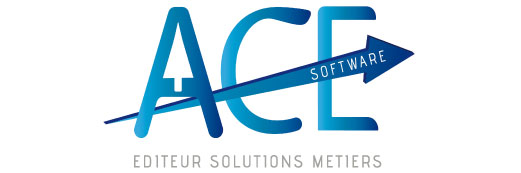
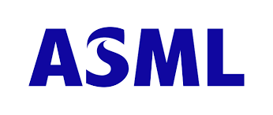

Accueil
Sommaire
CV
Presentation personnelPresentation entreprise
Presentation de l'entreprise et de son fonctionnementMissions
Tâches au sein de l'entrepriseCompetences
Langages et logiciels maitrisésProjets
Projets réalisés dans le cadre de mes études
CV
Etudiant en deuxième années de BTS informatique, actuellement à la recherche d'une alternance. Ayant par le passé effectué une formation et un stage au sein d'un IUT, je possède des expériences dans le domaine de la programmation et de l'administration système.
Parcours professionnel et projets
Sept 2022 – Juin 2022 : Développeur chez ACEsoftware. Développeur assistant en windev et helpdesk
Mars 2020 – Aout 2020 : Observatoire de la Côte d’Azur. Interfaçage Python d’un logiciel de simulation en C++
Institut Universitaire de Technologie - Nice : Système de ventes en ligne en Php et PhpMyAdmin
Formations:
2022-2024BTS SIO, Lycée Estienne d’OrvesSept.
2018 –Juil.2020Institut Universitaire de Technologique de Nice, Fabron
Juil.2014Baccalauréat général –Scientifique
Lycée Amiral de Grasse Sept. 2011 –Juil.2014CNED –Préparation aubaccalauréat
Presentation entreprise
L'entreprise a été créée en 1998 par Brice Roux, elle est spécialisé dans le développement d'ERP (logiciel de gestion intégré). AceSoftware offre aussi des services de consultant dans le domaine de la comptabilité. Elle compte environ 700 clients
L'entreprise est une SARL implantée à Sophia Antipolis et possède une antenne à Paris. Elle emploi une dizaine de salariés.
L'entreprise se concentre sur la réalisation d'un ERP. L'ERP (Enterprise Resource Planning) est un logiciel dédiée aux entreprises afin de contrôler un ensemble de tâche liés à son activité. Il permet de gérer les opérations liées à la gestion financière, à la production, aux ressources humaines, ainsi qu'aux ventes. L’ERP concentre un ensemble d'outils spécialisés et unifiées pour les entreprises, répondant à des enjeux d'amélioration des ressources et des coûts. Il agit aussi comme une base de données recenssant toutes les informations relatives aux employées.
Missions
Mon insertion au sein de l'entreprise c'est faite sous la houlette du responsable de la paie. Celui-ci m'a initié aux termes techniques relatif à la paie mais aussi au fonctionnement général de l'entreprise et son environnement. J'ai notamment été formé aux divers outils informatiques, comme par exemple AnyDesk afin de pouvoir prendre le contrôle du poste d'un client pour résoudre un problème ou faire une démonstration. J'ai aussi été informé de toute les caractéristiques relatives aux clients.
Mon travail s'est décomposé en deux grande partie: la première, le matin, consistait en du helpdesk sur la paie et la deuxième partie concernait la programmation informatique
Chaque matin, j'étais chargé de traiter les questions d'une quinzaine de client, aussi bien sur des sujet relatifs à l'utilisation du logiciel que certains problèmes et autres question relatives à la paie. Cela se faisait par un système de récupération et de traitement des mails intégré au sein du logiciel ERP de l'entreprise.
Généralement durant l'après-midi, j'étais chargé de tracer et de corriger des problèmes soulevés par certains utilisateurs.
Formation
Compétences
Au cours de ma formation, j'ai pu acquerir des bases dans l'administration réseau, la réalisation de scripts système ainsi que le développement web. Mon insertion au sein de l'entreprise c'est faite sous la houlette du responsable de la paie. Celui-ci m'a initié aux termes techniques relatif à la paie mais aussi au fonctionnement général de l'entreprise et son environnement. J'ai notamment été formé aux divers outils informatiques, comme par exemple AnyDesk afin de pouvoir prendre le contrôle du poste d'un client pour résoudre un problème ou faire une démonstration. J'ai aussi été informé de toute les caractéristiques relatives aux clients.
Projet
Lors de ma présence en entreprise, le projet qui m'était confié été le développement d'un ERP, un logiciel de gestion comptable. Au sein de ma formation, j'ai été amené à travailler en groupe sur la réalisation d'un réseau d'entreprise.
Veille technologique
Notre veille technologie porte sur les machine photolitographique.
La photolithographie est l'ensemble des opérations permettant de transférer une image vers un substrat, comme le sillicium.
Cette technique est par conséquent très utilisée dans l'industrie du semi-conducteur.
Les motifs de l'image ainsi transférée deviendront par la suite les différentes zones des composants électroniques.
Les technologies de la photolithographie ont donc un impact considérable dans l'industrie informatique.
Parmi les grands fabricants, nous avons ASML, Canon et Nikon.
ASML, une entreprise néerlandaise est aujourd'hui le leader dans cette technologie et son principale client est le Taiwanais TSMC. 
ASML est capable de produire des machines avec une finesse de gravure tel que le nombre de transistors possibles sur un circuit augmente considérablement.
A tel point que cela a un impact sur le plan géopolitique. En effet, les Etats-Unis ont fait pression sur les Pays-Bas afin que ASML n'ai pas le droit de vendre ses machines à la Chine.